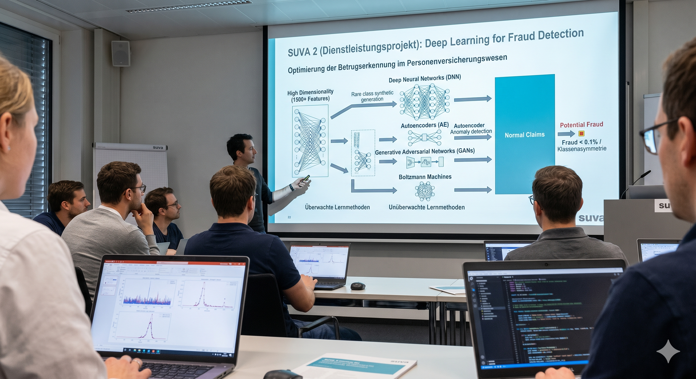
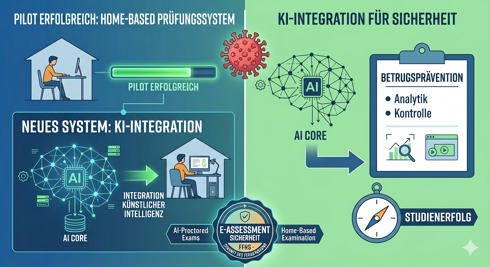
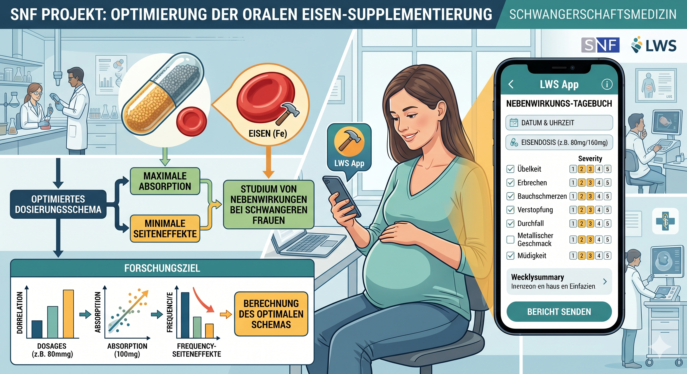
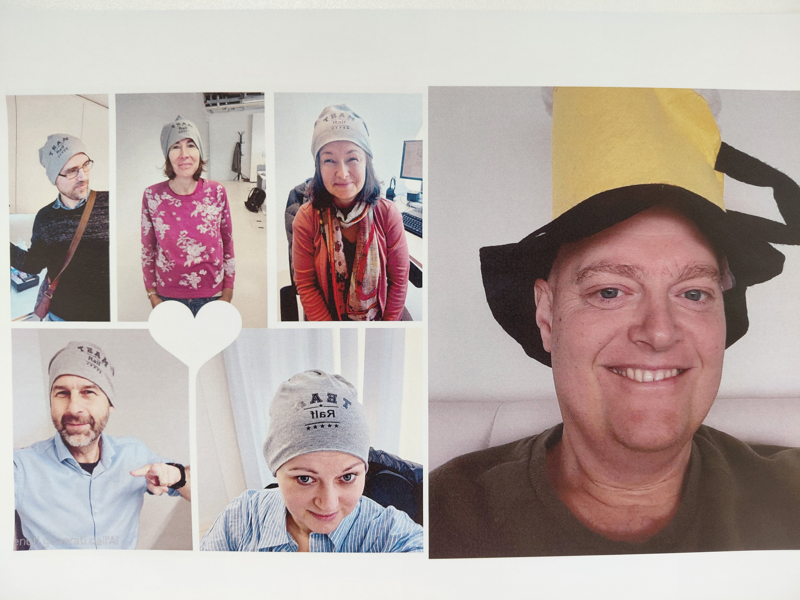

Professional Bio
JProf. Dr. Joachim Steinwendner is a distinguished expert in Artificial Intelligence (AI), Machine Learning, and Digitalization, specializing in high-impact applications within the Health and Geosciences. As the Head of the GeoHealth Analytics research field at the Institute of Applied Datascience and AI (ADA), he bridges the gap between advanced data science and complex spatial-medical challenges.
His work focuses on developing robust, practical systems that integrate data-driven intelligence into critical sectors: Healthcare & Public Health: Implementing applied mobile solutions and AI-driven analytics for medical research. Insurance & Finance: Advanced fraud detection utilizing high-dimensional data processing. Digital Education: Innovation in AI-assisted e-assessment and automated proctoring workflows. Joachim is recognized for his commitment to measurable real-world impact, ensuring that theoretical machine learning models translate into reliable, scalable implementations.
In addition to his research leadership, he serves as a lecturer at Fernfachhochschule Schweiz (FFHS) and ETH Zurich, shaping the next generation of data scientists. He is also the co-author of the acclaimed technical textbook Neuronale Netze programmieren mit Python (Neural Networks Programming with Python), published by Rheinwerk Verlag.
Core Focus Areas Geospatial Data Analytics Neural Network Development AI Security & Proctoring Systems Digital Health Transformation
Research Interests
- GeoHealth Analytics: Utilizing spatial data to analyze health trends and environmental impacts.
- Artificial Intelligence & Machine Learning: Developing predictive models and deep learning architectures.
- Data Science: Implementing robust data processing and visualization techniques.
- Digitalization in Healthcare: Modernizing health systems through intelligent technology.
Academic Degrees
Dr. nat. techn. (Doctor of Natural Resources and Life Sciences)
MSc in Computer Science (Informatik)
Teaching Areas
- Data Science & Machine Learning (FFHS & ETH Zurich)
- Neural Network Development
- Python for Scientific Computing
Telefon
+41 44 512 09 31
E-Mail
joachim.steinwendner(at)ffhs.ch
Arbeitsort
Zürich
Arbeitstage
Mo Di Mi Do Fr
Publications & Professional Networks
Featured Book
Schwaiger, R., & Steinwendner, J. (2019). Neuronale Netze programmieren mit Python. Rheinwerk Verlag.
This guide provides a practical introduction to building neural networks from scratch, making complex AI concepts accessible to developers and students alike.
Project Portfolio
SUVA 2
Insurance / Fraud Detection
Deep Learning methods for detecting rare fraud patterns in high-dimensional insurance datasets.

E-Assessment AI
EdTech / AI Proctoring
Home-based examination with AI-assisted proctoring and video-based anomaly monitoring.

Iron Supplementation Study
HealthTech / SNF
App-supported monitoring of side effects in oral iron supplementation during pregnancy.

Trigger Tools in Home Care
Public Health / Decision Support
Algorithms for management and risk-oriented support of chronically ill home-care patients.
